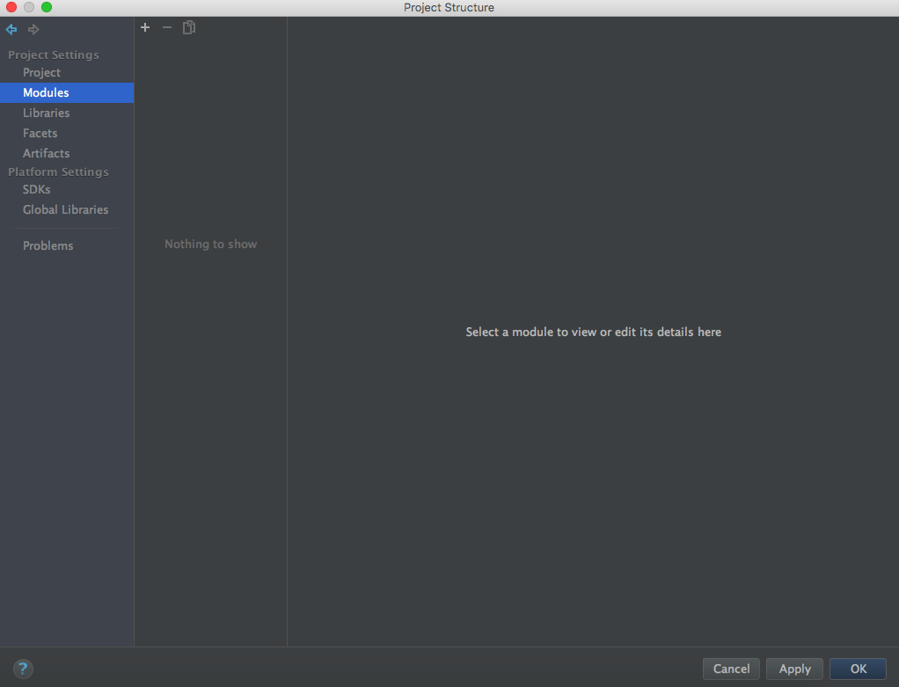
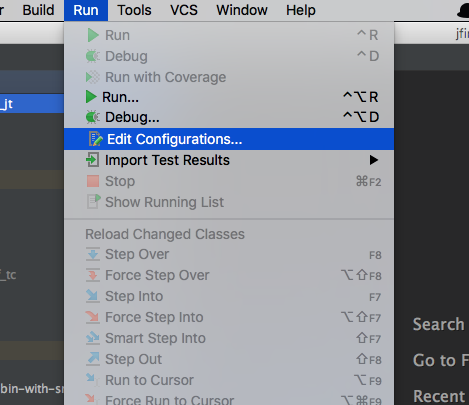

额 上一个图床软件貌似要升级，诶懒得升级，试了下把图片放在和文章同名的文件夹下，引用的时候，如果加上相对路径的文件夹名字，在本地可以预览，但是上传到Github就GG了，查看了public的文件夹，原来编译后，图片是和文章在同一级别的目录下，直接引用就可以显示出来了。
get✅
新建一个空项目
新建一个项目，可以是空项目，也可以是连模块一起建的项目，本文为了演示Jetty和tomcat均能运行的效果，所以先建一个空项目，再分别建两个不同的module，以便区分。
如果项目和模块一起建，可以把Web Application选上，其他的默认就行。
因为我们要分别测试jetty和tomcat的效果，要建两个模块，所以先建一个空项目
项目参数配置
新建Module
如果新建一个空项目，会立即出来一个ProjectStructure的配置窗口。如果是连模块一起建的，请从【File】-【ProjectStructure】中选择，对项目参数进行配置。
选择Modules，准备新建Module

新建Jetty运行模块
新建模块
我们先新建一个module，用于使用jetty来运行
选上“Web Application”后，点击Next。
在出现的窗口中，直接在Module name中输入想要新建的module名字，下面的Content root和Module file location中会自动把路径填进去。
为了便于区分，我们把jetty运行的module命名为jf_jt。
点击“Finish”。
此时会出现如下界面；
选择“Paths”选项卡，选中“Use module compile output path”后，在“Output path”和“Test output path”中均写上类输出的路径。按照一般常规写法，我把这个目录放在module下，web\WEB-INF路径下的classes目录下。
点击“Apply”，把配置启用起来；
导入类库
然后点击左侧的Libraries选项卡；
在做这一步之前，我们先要把需要的类库分别拷贝到我们建立的类库目录中。
这个模块是需要jetty来运行的，所以需要JFinal的类库和jetty的类库，事先准备好这几个类库。
Jfinal-2.2-all目录下有需要的类库文件。
“jfinal-2.2-bin.jar”或“jfinal-2.2-bin-with-src.jar”是jfinal本身的jar包，任选一个都可以，为了方便调试，可以选择“jfinal-2.2-bin-with-src.jar”。 目前这个项目是为了Jetty而建的，所以要把“jetty-server-8.1.8.jar”也要包含进去。 在电脑中找到项目目录，进入到Module路径中，新建文件夹；
新建一个classes目录(上文新建module时设置的输出目录)和lib目录；
把“jfinal-2.0-bin.jar”和“jetty-server-8.1.8.jar”两个文件拷贝到刚才新建的lib目录下(注意，使用jfinal-2.0-bin.jar和使用jfinal-2.0-bin-src.jar，后续界面会略有不同，但差异不大)。
回到Intellij IDEA配置界面。
选择左侧的Libraries选项卡，点击中间的“+”号，新增Java类库。
在弹出的窗口中，找到lib目录并选中刚才拷进去的“jfinal-2.0-bin-with-src.jar”包。
点击“OK”。
此时会让你选择这些类库将用于哪些module（如果你在项目中有多个module,在此均会列出来）在这里，我们选择这些类库用于“jf_jt”module。
此时类库就会出现在列表里。

点击“Apply”，保存配置。
再重复上述步骤，导入jetty的jar包。导入后如下图所示：
再选择左侧的“Artifacts”选项卡，此时会出现空白的Artifacts界面。(可以先关闭在打开就不会是 空白的页面了)
或出现已经有一个“jf_ft.war exploded”的界面(如果关闭后重新打开Project Structure界面就会出现)。建议：最好在导入类库后，点击“OK”，关闭本界面后，重新通过【File】-【Project Structure】菜单打开本界面后，选“Artifacts”选项卡进行操作，避免重复建立jf-ft.war exploded。
重新打开界面，并选择Artifacts选项卡后，界面会如下图所示：
此时窗口下部会出现一条告警信息。如上图红框部分。
此时点击“Fix…”按键，选择“Add‘jfinal-2.0-bin-with-src’to the artifact”，即可。
设置好的界面如下图所示（把Build on make选上）；
点击“Apply”按钮保存设置；
再点击“+”号，添加一个“Web Application：Archive”，此时选“For ‘jfjt:war exploded’”；
建好后，界面如下图所示(如果还有告警提示，按照上面步骤，点击“Fix”按键把类库添加进Artifact中);
选中“Build on make”选项后，点“OK”按键保存并退出配置界面。
至此Jetty运行的模块已经建好。
新建Tomcat运行模块
新建模块
点击【File】-【New】-【Module】：
选上“Web Application”，并点“Next”：
填上Module的名称，这里起名为jf-tc,然后点击“Finish”：
导入类库
现在可以直接在IDEA的界面建目录classes和lib。
鼠标右键点击[jf-tc]-[web]-[WEB-INF]目录，在出来的菜单里点击【New】-【Directory】。
输入classes和lib目录的名称：
建好目录后的模块如下所示:
点击【File】-【Project Structure】进入项目，步骤和上一个模块建立的时候一样，此时界面里已经有两个模块，选中jf-tc模块后，设置Path：
接下来再设置Libraries，在此之前，需要把jfinal-2.0-bin-with-src.jar拷贝到lib目录下。
在“Libraries”选项卡中点“+”号，选“Java”：
这里只需要导入一个jar包即可(记住，目录不要选错，要选刚才拷进去的jf-tc模块下lib目录的jfinal-2.0-bin-with-src.jar文件)。

注意：选中目标Jar包后，选模块的时候，一定不要选错。
点“OK”后，来到Artifacts选项卡：
添加一个Artifact
记住不要选错模块。
添加成功后，记住Fix掉警告信息(新加的两个Artifact都要fix)。然后都选上“Build on make”选项。
至此，两个模块都建好，可以开始真正的编写代码之旅了。
修改运行配置
创建Jetty运行配置
点击【run】-【Edit Configurations】菜单：

出现下面的界面，并点击左上角的“+”号，选“Application”选项：
设置一个名称，在这里命名为“jf-jt-jetty”。
设置Main Class(在出来的“Choose Main Class”窗口里直接输入com.jfinal……,下面会直接把class列出来，不用搜索和查找).
设好Main Class以后，设置“working directory”和“Use classpath of module”两项，如下图所示：
点击“OK”，设置完成。
创建Tomcat运行配置
点击【run】-【Edit Configurations】菜单：
选择【Tomcat Server】-【local】菜单：
配置Tomcat参数，起一个名字，然后点击最右边的“+”号，增加一个Artifact：
在出来的窗口中，选“jf-tc:war exploded”即exploded的那个war。
点击“OK”后，就配置完成了。
注意，这个Application context里填写的路径，是你调试或运行时出现的url的后缀，比如，如果你在此设置“/”，则最后是通过“http://localhost:8080/”运行和调试；假如你在此设置为“/test”，则最后是通过“http://localhost:8080/test”进行访问和调试。
添加源文件
现在可以添加源文件了。我们可以分别在两个项目下建立源文件(建源文件的过程不管上面jetty和tomcat项目都是一样的，我们以tomcat项目来举例):
我们在src路径下，添加一个package名称为com.demo.
再在这个package下建三个类：
内容如下：
|
|
|
|
另外再建两个类HelloController.java和Indexcontroller.java,内容分别如下：
编辑模块下，web\WEB-INF路径下的web.xml文件，内容如下：
|
|
至此，tomcat部分已经完成，按同样的方式配置jetty部分(也可以直接把package和web.xml文件直接拷贝过去)。
运行项目
在Jetty下运行
点击【Run】-【Run】菜单：
页面中间会出现让你选择运行哪个模块的选项，我们选择jetty的模块。
此时IDEA界面下半部会显示jetty的启动信息，如下：
说明jetty已经正常启动了。
此时需要手动打开浏览器页面，输入“http://localhost”，就会出现Index控制器对应的页面。(注意，如果你的电脑上装了别的Web服务器，注意端口冲突)。
IDEA下部窗口会出现相应的调试信息。
输入http://localhost/hello,会出现hello控制器对应的页面。
在Tomcat下运行
同样点击【Run】-【Run】菜单，在页面中心的弹出菜单选“jf-tc-tomcat”。
IDEA界面下半部分会显示启动tomcat过程中的日志，等待tomcat启动后，会自动调用本地浏览器窗口，把index页面内容显示出来。
出来hello控制器中的内容
项目实际部署
Intellij IDEA打包的war文件位于项目根目录的out目录下。
把此文件拷贝到tomcat的webapps目录下(可以改名，例如改名为test.war),无需做任何修改，启动tomcat后，直接访问：http://ip:8080/test/即可正常访问页面。
要更改输出目录，请在【File】-【Project Structure】-【Project】标签页修改即可。
pic
后记
自带的jetty不管怎么设置就是启动不起来无语！